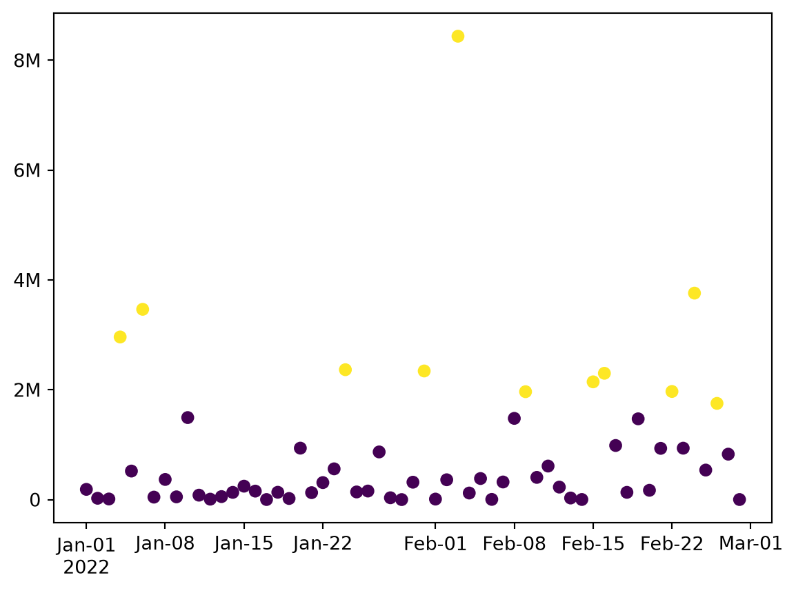
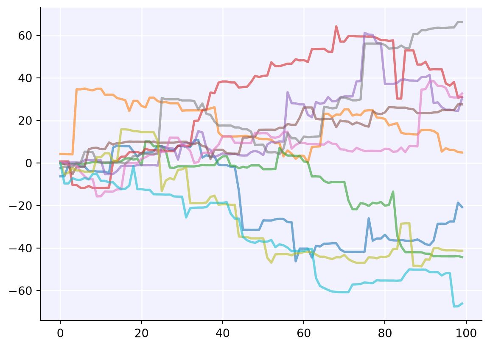
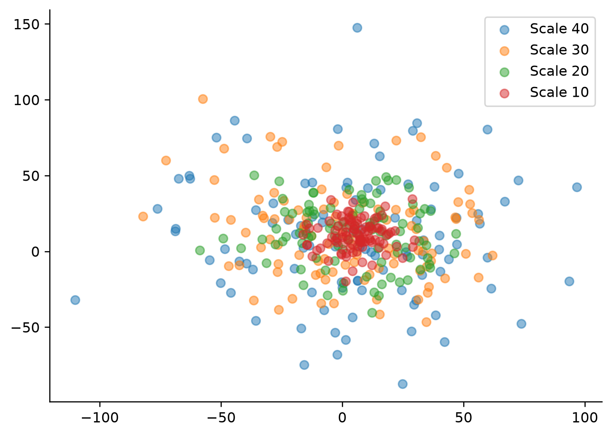
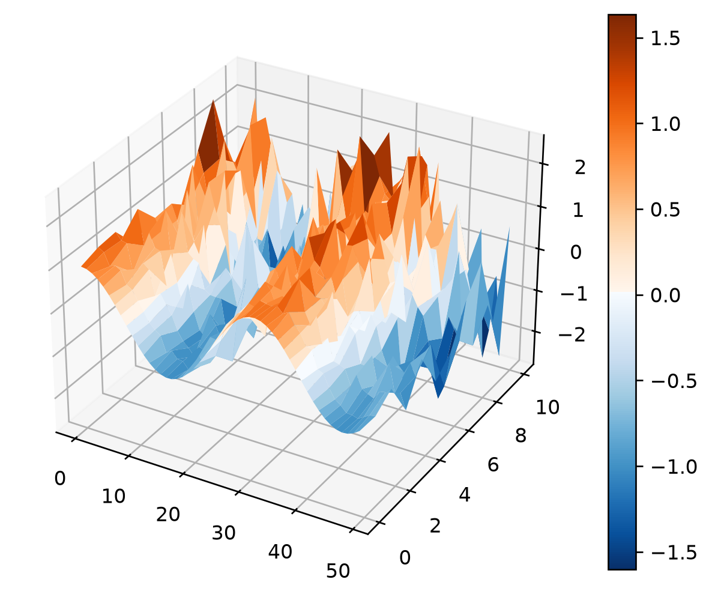

Doing science in Python is fun. But it can also be a pain. Sciris can’t make it any more fun, but hopefully it can make it less of a pain. This tutorial showcases some of Sciris’ most commonly used features, which are intended to help Python get out of the way of your science. It won’t write your code for you like ChatGPT, but it does mean you have less code to write.
Simple data operations
While Sciris does add some new features (we’ll get to those later), its main purpose is to let you do the things you’re already doing more easily. For example, finding values in an array:
import numpy as npimport sciris as scdata = np.random.rand(50)inds = sc.findinds(data>0.9)print(f'While the mean of the data was {sc.arraymean(data)}, 'f'there were {len(inds)} values over 0.9: 'f'these were {sc.strjoin(inds)}.')
While the mean of the data was 0.54 ± 0.59, there were 6 values over 0.9: these were 0, 3, 10, 14, 31, 48.
I’m sure you already knew how to find indices of an array, calculate the mean and standard deviation, and turn a list of values into a string. But it’s nice if those things can be made easier, right?
Simple data containers and plotting
Matplotlib, NumPy, and pandas are all fantastic – but often they provide lower-level interfaces than what is commonly needed, meaning that some tasks can be made even simpler.
import matplotlib.pyplot as plt# Create some datadates = sc.daterange('2022-01-01', '2022-02-28', as_date=True) # Create a list of datesvalues =1e6*np.random.randn(31+28)**2# Generate some valuesoutliers = values >2*values.mean() # Find outliers# Plotdata = sc.dataframe(x=dates, y=values, outliers=outliers) # Shortcut to pd.DataFrameplt.scatter(data.x, data.y, c=data.outliers) # Vanilla Matplotlib!sc.dateformatter() # Format a date axis nicelysc.SIticks() # Convert the y-axis to use SI notationplt.show()# Describe resultsmean = sc.sigfig(data.y.mean(), 3, sep=True)print(f'The data had mean {mean} and there were {data.outliers.sum()} outliers.')

The data had mean 854,000 and there were 11 outliers.
Simple containers
Can’t decide if something should be a dict or an object? Do you want the flexibility of a dict, but the convenience and explicitness of an object? Well, why not use both?
data = sc.objdict(a=[1,2,3], b=[4,5,6]) assert data.a == data['a'] == data[0] # Flexible options for indexingassert data[:].sum() ==21# You can sum a dict!for i, key, value in data.enumitems():print(f'Item {i} is named "{key}" and has value {value}')
Item 0 is named "a" and has value [1, 2, 3]
Item 1 is named "b" and has value [4, 5, 6]
Loading and saving
Do you have a custom object that it would be nice to be able to save and pick up where you left off?
class Sim:def__init__(self, days, trials):self.days = daysself.trials = trialsdef run(self):self.x = np.arange(self.days)self.y = np.cumsum(np.random.randn(self.days, self.trials)**3, axis=0)def plot(self):with plt.style.context('sciris.fancy'): # Custom plot style plt.plot(self.x, self.y, alpha=0.6)# Run and savesim = Sim(days=100, trials=10)sim.run()sc.save('my-sim.obj', sim) # Save any Python object to disk# Load and plotnew_sim = sc.load('my-sim.obj') # Load any Python objectnew_sim.plot()

Parallelization
Have you ever thought “Gosh, I should really parallelize this code, but it’s going to take too long, and besides doctors say you should get up and stretch everyone once in a while, so it’s OK that I’m waiting for 9 minutes out of every 10 while my code runs”? This might be for you.
# Define the function to parallelizedef func(scale, x_offset, y_offset): np.random.seed(scale) data = sc.objdict() data.scale = scale data.x = x_offset+scale*np.random.randn(100) data.y = y_offset+scale*np.random.randn(100)return data# Run in parallelscales = [40,30,20,10] # Reverse order is easier to see when plottedresults = sc.parallelize(func, iterkwargs=dict(scale=scales), x_offset=5, y_offset=10)# Plotsc.options(dpi=120, jupyter=True) # Set the figure DPI and backendfor data in results: plt.scatter(data.x, data.y, alpha=0.5, label=f'Scale {data.scale}')plt.legend()sc.boxoff();# Remove top and right spines

Putting it all together
Here’s the “showcase” example of the wave generator from the getting started page, which hopefully now makes more sense!
# Define random wave generatordef randwave(std, xmin=0, xmax=10, npts=50): np.random.seed(int(100*std)) # Ensure differences between runs a = np.cos(np.linspace(xmin, xmax, npts)) b = np.random.randn(npts)return a + b*std# Start timingT = sc.timer()# Calculate output in parallelwaves = sc.parallelize(randwave, np.linspace(0, 1, 11))# Save to filesfilenames = [sc.save(f'wave{i}.obj', wave) for i,wave inenumerate(waves)]# Create dict from filesdata = sc.odict({fname:sc.load(fname) for fname in filenames})# Create 3D plotsc.surf3d(data[:], cmap='orangeblue')plt.show()# Print elapsed timeT.toc('Congratulations, you finished the first tutorial')

Congratulations, you finished the first tutorial: 0.280 s